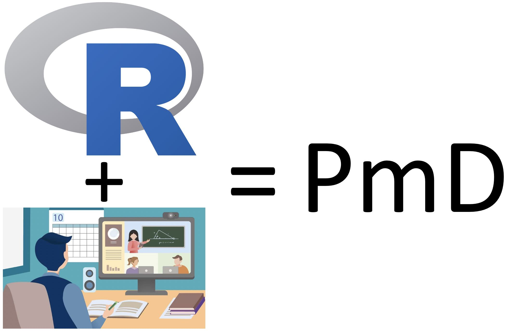
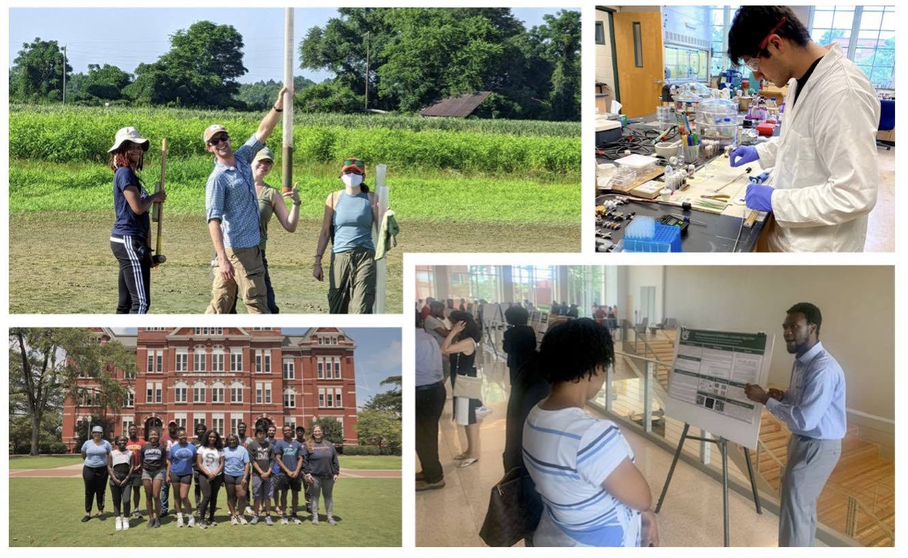

O Science Internship Program (SIP), trabalha a profissionalização acadêmica permitindo o contato de jovens com ciência e pesquisa. Baseado na atuação do Dr. Gepoliano Chaves no SIP, o PAEI disponibiliza a pesquisa real na modalidade à distância para a Educação, Ciência e Tecnologia brasileiras. A pesquisa real na modalidade à distância (PmD) visa contribuir para o avanço científico na fronteira do conhecimento.

Diferente da pesquisa real regular acadêmica, a PmD apresentada pelo PAEI não necessita contato presencial e físico entre os participantes, pois os experimentos científicos são fundamentados nas linguagens de programação computacional, como R, Bash e Python. Participantes do PAEI são expostos à PmD por meio das Experiências de Pesquisa para Estudantes (EPEs) detalhadas abaixo.
As experiências de pesquisa para estudantes permitem exploração acadêmica e profissional que desenvolvem vivência de carreiras, pesquisa e ciência para jovens estudantes. Embora muitas EPEs ocorram de forma física e presencial, outras, devido à natureza essecialmente computacional, como a bioinformática e a genômica, podem ser executadas de formas totalmente remotas e on-line.

Exemplos de EPEs desenvolvidas na Universidade da Califórnia Santa Cruz são apresentadas a seguir.
Oferece a alunos motivados e avançados, a oportunidade única de trabalhar e aprender em instituição de pesquisa de primeira linha.
Imersão em bioinformática do Treehouse Project, no Instituto de Genômica da UCSC, que promove desenvolvido de pesquisa computacional aplicada à genômica. Busca contribuir para o progresso e uso da genômica no tratamento de cânceres pediátricos.
O BBC visa ser uma “ponte” para diversas limitações de ordem histórica e social para acesso igualitário à ciência e tecnologia genômica.
Esta modalidade de pesquisa foi implementada pela primeira vez pela Diretoria de Educação à Distância (DED) da Coordenação de Aperfeiçoamento de Pessoal de Nível Superior (CAPES), visando democratizar o acesso à educação, pesquisa e ciência para o interior do país por meio da Universidade Aberta do Brasil (UAB).
A participação do Núcleo de Ex-Bolsistas Brasileiros no Exterior no Grupo de Trabalho Interinstitucional (GTI) entre CAPES e CNPq levou o Núcleo de Ex-Bolsistas a propor ações que agregassem ao trabalho das diretorias da CAPES na formação continuada de professores e alunos da educação básica.
Assim, chegou-se à proposta de um programa que possibilitasse tal auxílio. Neste contexto, desenvolvemos a minuta curta do programa. A iniciativa de um programa de PmD em que ex-bolsistas e pesquisadores brasileiros radicados no exterior possam retribuir os investimentos do povo brasileiro em sua formação, contribuem com a expertise do pesquisador no exterior e a internacionalização da educação brasileira.
No PAEI buscamos implementar a PmD em parceria com DED/CAPES e Universidade Aberta do Brasil, usando o caráter tecnológico e assíncrono da ciência genômica e das linguagens de programação computacional como exemplos.
Para tanto, pesquisadores mentores, professores e profissioais ou estudantes da educação básica, assim como empreendedores, compartilham e desenvolvem ferramentas, artigos científicos, código-fonte e outros produtos de contribuição para a educação, CT&I brasileiras.
O compartilhamento e versionamento de código-fonte ocorrem usando o GitHub. O website e desenvolvimento de ferramentas relacionadas ao PAEI são promovidos usando o GitHub no versionamento e compartilhamento de código-fonte, assim como o Lab PmD.